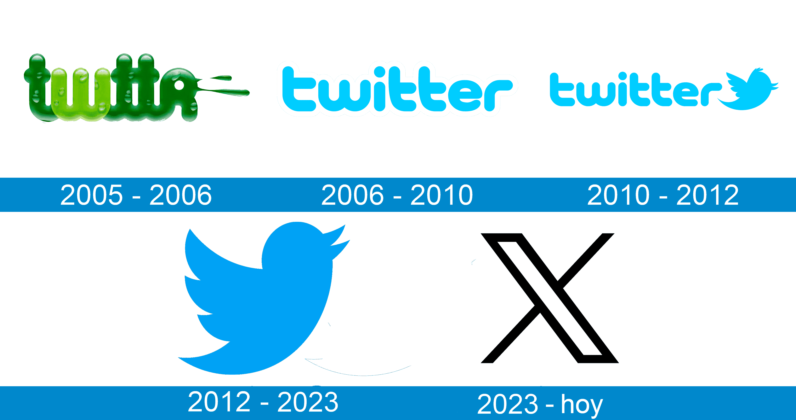

Twitter es una red social gratuita que te permite escribir mensajes de forma rápida y sencilla.
Cualquier persona puede crear una cuenta o perfil para compartir sus opiniones, gustos e intereses,
pero también, para estar informada sobre todo lo que acontece en el mundo, ya que la principal característica de
Twitter es que allí encuentras información en tiempo real.
¿Como nació Twitter
La idea de Twitter surgió cuando Dorsey propuso usar SMS para crear conversaciones entre pequeños grupos de personas.
Glass y Dorsey trabajaron en esta idea y la presentaron a la compañía, que estaba entusiasmada. Así nació Twitter en 2006,
inicialmente como un servicio interno de Odeo. El nombre ‘Twitter’ fue elegido por Noah Glass, inspirado en el trino de un pájaro,
y reflejaba la tendencia de las startups de la época de eliminar vocales en sus nombres.
El primer tweet en la historia de Twitter fue publicado por Jack Dorsey el 21 de marzo de 2006, con el mensaje “Just setting up my twttr”.
El límite de 140 caracteres en los tweets se debió a las limitaciones del protocolo SMS, ya que Twitter estaba basado en mensajes de texto.
En 2022, Elon Musk adquirió una participación mayoritaria en Twitter y anunció planes para reformar la plataforma. Bajo su liderazgo, Twitter se
transformó en X, con cambios significativos en el diseño y las funciones de la red social. Aunque los cambios han sido controvertidos,
Twitter sigue siendo una fuerza importante en el mundo de las redes sociales, con millones de usuarios activos en todo el mundo.

Más información sobre su origen
¿Para qué sirve Twitter?
Encuentra los hechos y las noticias más importantes del momento, de forma resumida.
Escribe tu opinión sobre temas que te gusten, como los deportes, la música, la política y hasta las premiaciones de la temporada.
Sin importar si estás desde un computador o un dispositivo móvil, usa Twitter para comunicarte con personas de todo el mundo.
Si tienes una empresa, envía mensajes masivos y anúnciale a tus clientes las novedades de tus productos y servicios.
Comunícate con las cuentas de algunas empresas, para recibir atención al cliente por este canal.